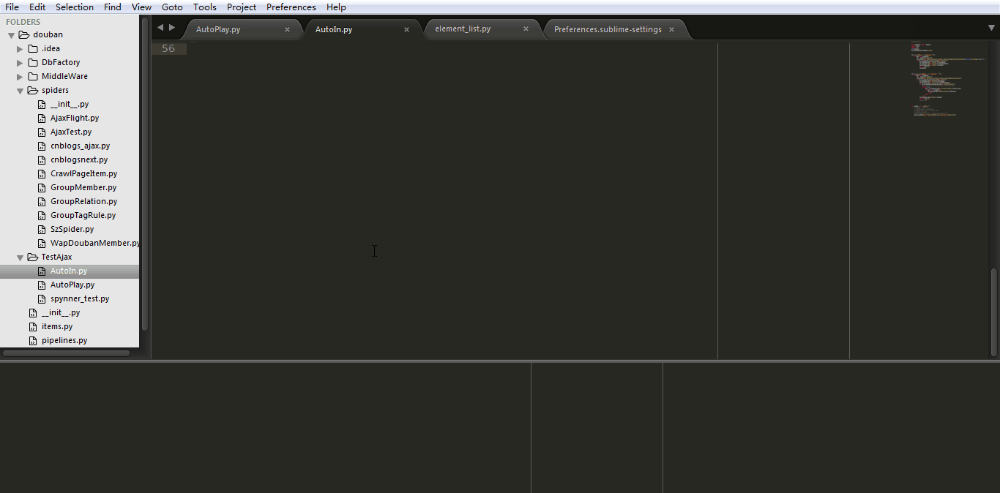

python下的自动化测试--selenium 验证码输入问题
之前一直在研究scrapy下数据抓取，在研究ajax数据抓取时碰巧研究了一下selenium，确实很实用，不过只做scrapy下的数据抓取，不怎 么合适，一是性能的损耗，一直需要开一个浏览器，二是对于爬虫来说，分析ajax的请求才是正事。好吧，说远了，今天来扯一下我对于自动化测试一些见解。
python下的自动化测试库实在之多，selenium是浏览器测试的大杀器，关于selenium:
refer:http://www.seleniumhq.org/
关于安装和python环境的一些其它指导我就不罗列了，网上一大片：）
在测试web网站的时候，经常会遇到一些需要验证码的输入，这个时候输入解析验证码，一般有以下的几种方式：
1.交给程序逻辑处理：
将图片download下来做验证码识别，然后填入到验证码框中，这样需要有专门的验证码识别块，代码量略大
2.将验证码的识别码功能暂时注释掉
这样就省去了验证一步
3.写死验证码功能
这样验证码识别就可以随意测试了。
其实以上的三种可能，无非看自己的和程序员们沟通的怎么样和自己的技术水平了，如果你想练练手，完全可以自己做一个验证码识别功能出来，如果和开发者沟通的比如顺利，可以请他们暂时注释一下或者写个临时验证码
第四种，我们可以自己在python的打开selenium的浏览器的时候继续操作，下面就直接上代码了：
1 2 3 4 5 6 7 8 9 10 11 12 13 14 15 16 17 18 19 20 21 22 23 24 25 26 27 28 29 30 31 32 33 34 35 36 | #coding=utf-8from splinter import Browserimport timeimport sysreload(sys)sys.setdefaultencoding('utf8')def log_in_doban(Name = '', PassWrod = ''): if Name and PassWrod: bs = Browser('chrome') if bs.is_element_present_by_id(id='email'): bs.find_by_id(id='email').fill(Name) bs.find_by_id(id='password').fill(PassWrod) if bs.is_element_present_by_id(id='captcha_field'): #bs.find_by_id('captcha_field').fill(code_img) while True: val = bs.find_by_id(id='captcha_field').first.value if val and len(val)>0: bs.find_by_id('captcha_field').fill(val) break pass pass bs.find_by_name('login').click() print 'log in' #bs.quit()if __name__ == '__main__': log_in_doban(Name='test_account',PassWrod='test_password') |

我感觉selenium 可以做的事情很多很多，既然能将浏览用程序来控制，那其实现的功能就会很多很多，比如刷票，比如自动发贴啥的，我就不一一介绍了。
https://screentogif.codeplex.com/